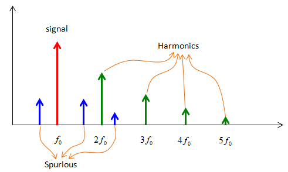

|
RF - Harmonics vs Spur Home : www.sharetechnote.com |
|
If you put a signal (the red arrow shown below) to any RF component, you would see some other output frequencies. In ideal devices, you should not get these additional frequencies (except in case of Mixer), but in real devices you would get some degree of those additional frequencies. If you look closely at those frequecies, you would get two different types. One type of them would happen at the exact multiples of the input frequency and this is called 'Harmonics' (as shown in green arrow). The other type of them would happen not at the multiplication of the input frequency and these are called 'Spurious'.

Is harmonics always bad ? : In most case, you would think it is bad because they are not what you wanted to have. But in some case, you may want to have a certain type of harmonics. For example, in some resonator application, there are some cases where we want to use a harmonics to get higher resonance frequency.
Is Spurious always bad ? : In most case, you would think it is bad because they are not what you wanted to have. But in some case, you may want to have a certain type of spurious. For example, in most of Mixer the output frequency is not same as any of the input frequencies and in most case the output frequencies are not at the harmonic point of any input frequency. So by definition, the output of mixer are a kind of spurious, but these are not bad spurious.
|